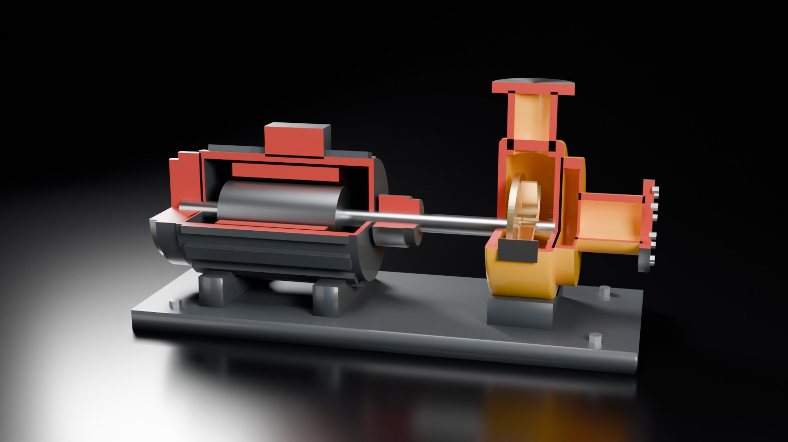
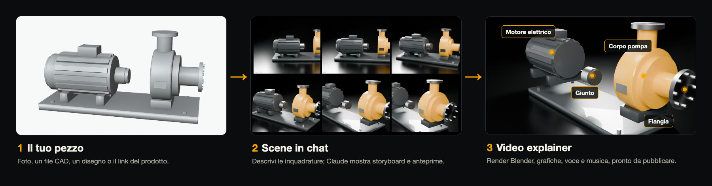
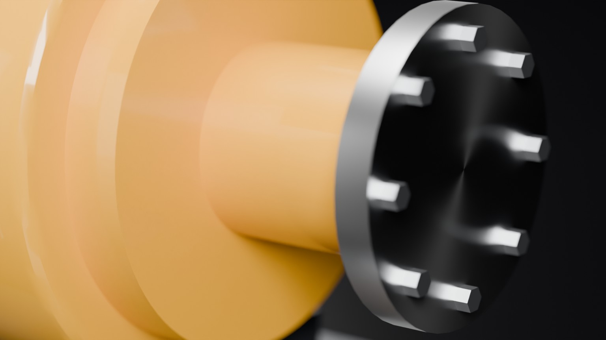

Turn your machine into an explainer video.
Trasforma la tua macchina in un video explainer.
Got a machine or a mechanical part? Give Claude Code photos, a CAD file or a drawing, and get an explainer video made with the power of Blender, in a few simple steps. It is all vibe coding: you chat, Claude drives Blender. No Blender or CAD skills needed.
Hai una macchina o un pezzo meccanico? Dai a Claude Code foto, un file CAD o un disegno, e ottieni un video explainer fatto con la potenza di Blender, in pochi passi semplici. Tutto in vibe coding: tu parli, Claude guida Blender. Senza conoscere Blender o il CAD.
InstallInstallaView on GitHubVedi su GitHubCreated by Mario Mele.Ideata da Mario Mele.

From your part to a video, in three stepsDal tuo pezzo al video, in tre passi
You bring what you have. Claude asks the right questions, builds the 3D model, sets up the scenes and shows you a storyboard before anything long is rendered.
Porti quello che hai. Claude fa le domande giuste, costruisce il modello 3D, imposta le scene e ti mostra uno storyboard prima di qualsiasi render lungo.


What a real camera can't showQuello che una ripresa vera non può mostrare
Open the machine up, take it apart in mid-air, swap its finish in a click. Shots that would be impossible, or very expensive, with real footage.
Apri la macchina, smontala a mezz'aria, cambia finitura con un clic. Inquadrature impossibili, o molto costose, con riprese reali.
See inside: rotor, shaft, impeller, section faces in colour.Vedi dentro: rotore, albero, girante, facce di sezione colorate.

Parts slide apart and back together, in order.I pezzi si separano e si rimontano, in ordine.

Paint in the real RAL colour, brushed steel, rubber, zinc-plated bolts.Vernice nel colore RAL reale, acciaio spazzolato, gomma, bulloni zincati.
Any setting, realistic lightQualsiasi ambiente, luce realistica
In the brief you choose where the product sits and the mood, even from a reference photo. Every image is made with the skill's scripts.
Nel brief scegli dove mettere il prodotto e con che atmosfera, anche partendo da una foto di riferimento. Tutte le immagini sono generate con gli script della skill.


A storyboard in secondsStoryboard in pochi secondi
Before every animated preview, one frame for each second of the scene, the last one included. Then the preview at 24, 12 or 6 fps, your choice.
Prima di ogni anteprima animata, un frame per ogni secondo della scena, compreso l'ultimo. Poi l'anteprima a 24, 12 o 6 fps, a scelta.

A phased workflow, with questions and approvalsUn percorso a fasi, con domande e approvazioni
At every phase the skill asks what it needs and stops for your ok. Decisions live in progetto.md, so you can pick the work up whenever you like. The skill speaks Italian.
A ogni fase la skill chiede cosa serve e si ferma per un ok. Le decisioni restano in progetto.md, così puoi riprendere il lavoro quando vuoi.
- 0BriefFormat, length, environment and mood, infographic palette.
- 1The productReal-scale model, materials and environment.
- 2The scenesLength, motion, shots; storyboard and preview.
- 3EditAll scenes in a single preview.
- 4GraphicsTitles, callouts, dimensions and subtitles in HyperFrames.
- 5AudioVoice, music and effects with ElevenLabs; scenes fitted to the voice.
- 6Full reviewThe complete draft video, for approval.
- 7Final renderCycles on Metal GPU, with a time estimate.
- 8Touch-upsOnly the changed frames are redone.
- 9DeliveryMaster at −14 LUFS, light version, subtitles; optional interactive 3D page.
- 0BriefFormato, durata, ambiente e atmosfera, palette delle infografiche.
- 1Il pezzoModello in scala reale, materiali e ambientazione.
- 2Le sceneDurata, movimenti, inquadrature; storyboard e anteprima.
- 3MontaggioTutte le scene in un'anteprima unica.
- 4GraficheTitoli, callout, misure e sottotitoli in HyperFrames.
- 5AudioVoce, musica ed effetti con ElevenLabs; scene adattate alla voce.
- 6Visione d'insiemeIl video completo in bozza, da approvare.
- 7Render finaleCycles su GPU Metal, con stima dei tempi.
- 8RitocchiSi rifanno solo i frame cambiati.
- 9ConsegnaMaster a −14 LUFS, versione leggera, sottotitoli; pagina 3D interattiva facoltativa.
InstallInstallazione
Copy the skill into Claude Code's skills folder, then install the dependencies.
Copia la skill nella cartella delle skill di Claude Code, poi installa le dipendenze.
git clone https://github.com/mariomele/blender-product-video.git
cp -r blender-product-video/blender-product-video ~/.claude/skills/| DependencyDipendenza | Used forServe per | InstallInstallazione |
|---|---|---|
| Claude Code | running the skilleseguire la skill | see the linkvedi il link |
| Blender 5.1+ | model, scenes, rendermodello, scene, render | in /Applications (other path: BLENDER variable)in /Applications (altro percorso: variabile BLENDER) |
| Blender MCP | Claude inside BlenderClaude dentro Blender | add-on + server from the releases page (.mcpb for Claude Desktop) or from sourceadd-on + server dalla pagina release (.mcpb per Claude Desktop) o da sorgente |
| Homebrew + FFmpeg | previews, edit, deliveryanteprime, montaggio, consegna | brew install ffmpeg |
| Node.js 22+ | HyperFrames | brew install node |
| HyperFrames | graphics, text, audio mixgrafiche, testi, mix audio | claude plugin marketplace add heygen-com/hyperframesclaude plugin install hyperframes@hyperframes |
| ElevenLabs MCP | voice, music, effectsvoce, musica, effetti | claude mcp add --transport http elevenlabs https://api.elevenlabs.io/v1/mcp |
| Blender skills | support skills (materials, lighting, lookdev…)skill di supporto (materials, lighting, lookdev…) | instructions in the repoistruzioni nel repo |
| Firecrawl MCP (optional)(facoltativo) | product pages, palette from a websitepagine prodotto, palette da un sito | instructions at the linkistruzioni al link |
| Machine skill (optional)(facoltativo) | extra interactive 3D page, delivered with the videopagina 3D interattiva extra, da consegnare insieme al video | git clone https://github.com/AirsupHQ/machine-skill.git ~/.claude/skills/machine |